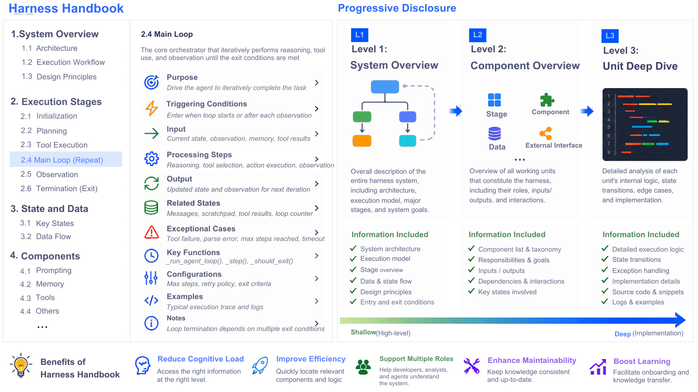
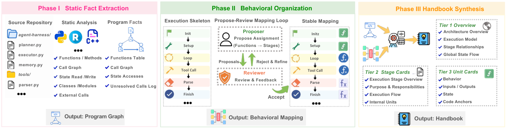
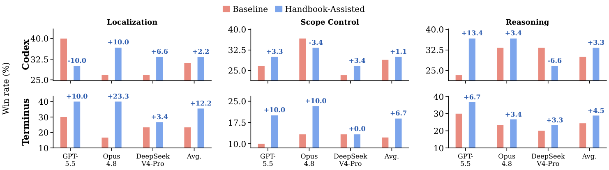
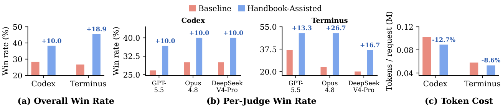
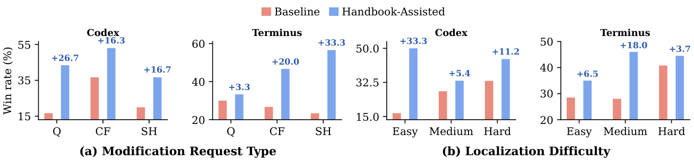

现代AI agent的能力不仅取决于基础模型，还取决于其harness：构建prompt、管理状态、调用工具、协调执行的框架。随着模型、API、环境和需求的变化，harness必须持续修改以增加能力或适配现有行为。
但修改harness的第一步：找到所有实现该目标的代码位置：在大型生产级harness中极其困难。一个行为可能分散在数百个函数、多个文件、不同的执行阶段和状态转换中。腾讯HYLLM Frontier与印第安纳大学等机构提出了Harness Handbook，一种自动合成的行为中心化表示，让修改规划变得系统化。
Paper指出，修改请求描述的是「系统应该做什么」，而代码库按「文件、函数、模块」组织。行为定位（Behavior Localization）：即找到实现目标行为的所有代码位置：是harness演化的核心瓶颈。
一个大型harness可能跨越数百个函数、数十个文件，执行逻辑分布在多个阶段，通过共享状态连接。因此，单个行为可能依赖多个不相邻的实现位置。现有的代码搜索、仓库索引和长上下文处理方法虽然让代码更容易检查，但仍然让开发者或coding agent自己去恢复这种映射。
论文在引言中用一个具体例子说明了这个问题：修改一个工具调用行为可能需要在prompt构造、状态管理、工具注册和结果处理四个不同位置同时修改，而传统的代码搜索无法自动识别这种跨模块的分散实现。
Harness Handbook是一种自动从代码库合成的行为中心化表示，通过三个阶段构建：
Phase I：静态事实提取（Static Fact Extraction）。 语言适配器解析代码库，提取函数、外部边界、源码位置、签名和调用边。构建程序图G，只保留能解析到内部函数的调用。此阶段是确定性的，不调用LLM。
Phase II：行为组织（Behavioral Organization）。 将源码单元组织到执行阶段骨架中。function-as-leaf模式下，用源码和调用图上下文提出函数→阶段分配，经迭代评审细化。file-as-leaf模式下，将扫描文件摘要与程序图结合推断阶段骨架。
Phase III：层次化合成与打包（Hierarchical Synthesis and Packaging）。 将Phase II的阶段骨架和源码组织转换为L1↔L3文档树和跨阶段状态寄存器视图。每个L3条目链接到静态识别的源码位置并验证一致性。最终渲染结果并打包结构化数据供后续源码定位和再同步使用。
最终生成的Handbook包含两个粒度：function-as-leaf（细粒度，每个行为对应到具体函数）和file-as-leaf（粗粒度，每个行为对应到文件级）。这使开发者或coding agent可以从高层行为描述逐步下钻到具体实现。


有了Handbook之后，下一步是如何利用它来指导修改。论文提出了Behavior-Guided Progressive Disclosure（BGPD），一种引导codingagent从高层行为描述逐步深入到相关实现细节的方法。
BGPD的工作流程是：修改请求先匹配到Handbook中的行为描述，找到相关的行为节点；然后从这些节点出发，沿链接下钻到具体的函数和代码位置；最后对这些候选位置进行验证，确认它们与当前源码的一致性。
这种渐进式披露避免了让agent一开始就面对整个代码库的复杂性，而是从行为层逐步深入到实现层，每一步都聚焦于与修改目标相关的部分。
BGPD的一个关键设计是验证机制：候选位置在被确认前会与当前源码进行比对，确保Handbook中的映射关系在代码演化后仍然有效。这防止了因Handbook过时而导致的错误定位。

论文在来自两个开源agentharness的多样化修改请求上评估了HarnessHandbook。关键发现：
更好的规划，更少的token：Handbook-Assisted规划在提升行为定位和编辑计划质量的同时，使用的planner token更少。这意味着Handbook让agent能够更快、更准确地定位需要修改的代码。
弱规划器匹配强模型：使用Handbook后，较弱的planner模型（如GPT-4o-mini）的规划质量可以匹配甚至超过不使用Handbook的更强模型（如GPT-4o）。这表明Handbook有效地将知识从代码库结构转移到了规划过程中。
最大收益在难点场景：最大的提升出现在涉及分散实现位置、很少执行的代码路径和跨模块交互的修改请求上：这些正是生产级harness演化中最常见的挑战。


参考：https://arxiv.org/abs/2607.13285